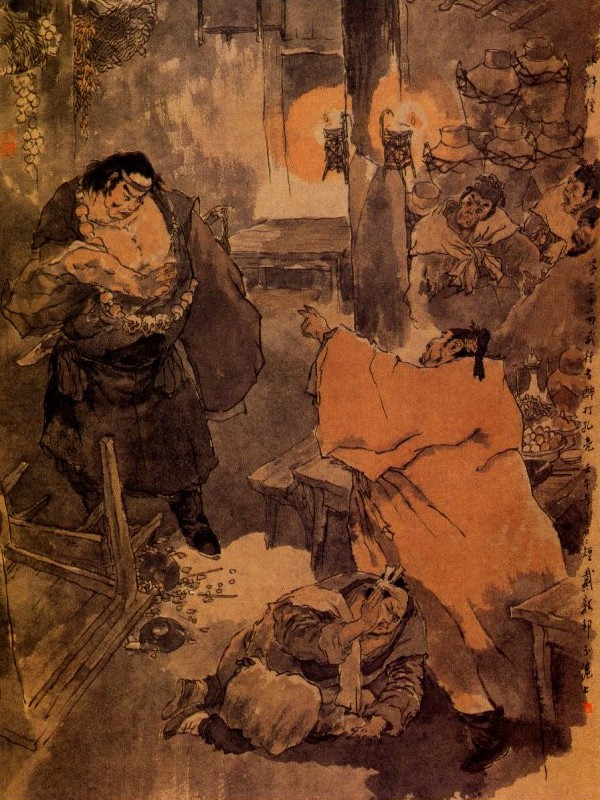
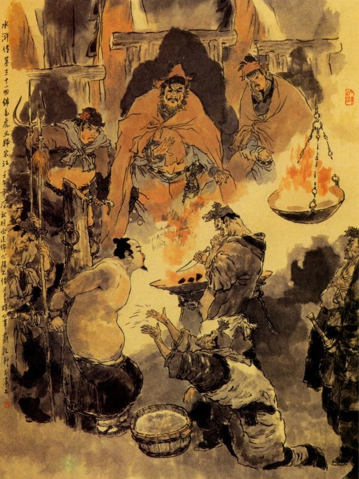
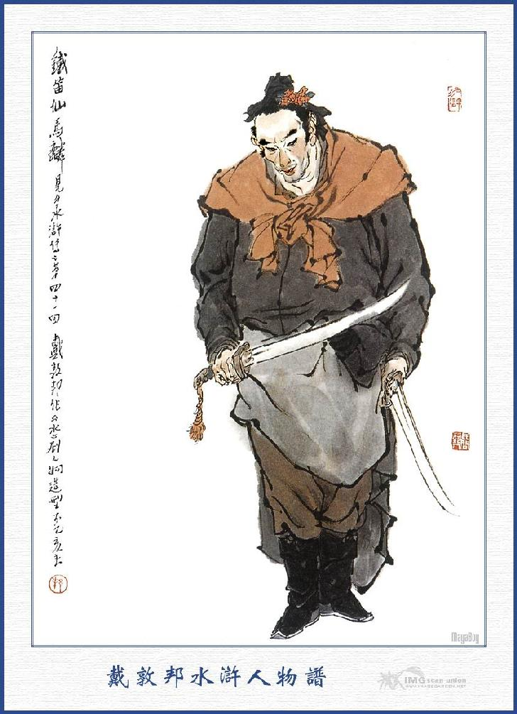
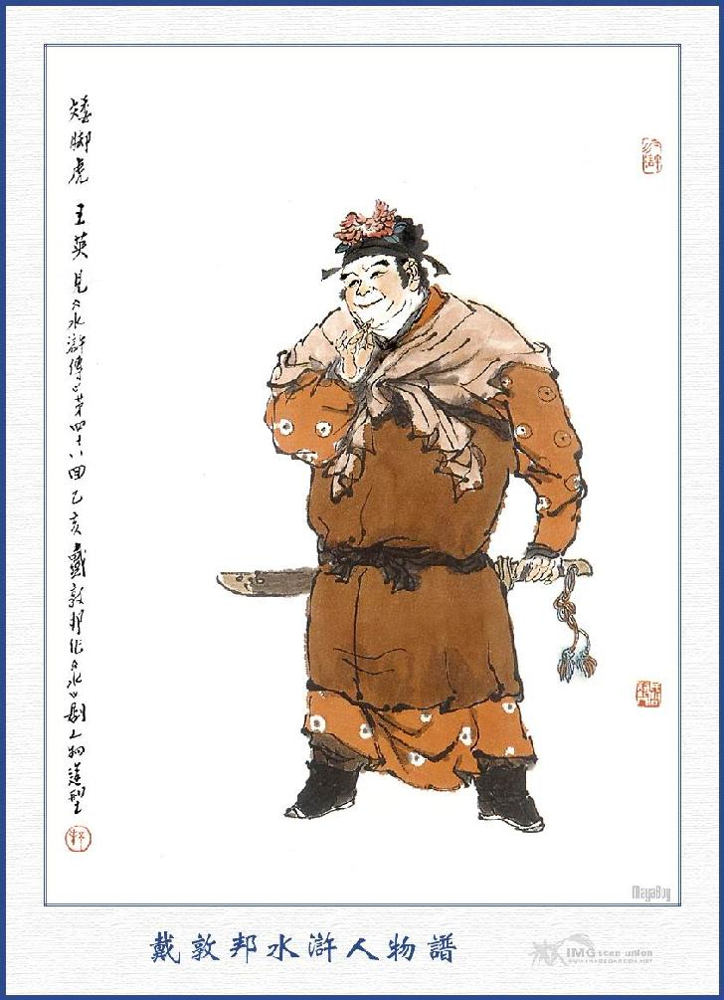

Nguyên khi Võ Hành Giả đấu với tiên sinh kia được mười lăm hợp, bèn lừa miếng phá đỉnh nhường cho tiên sinh sấn vào rồi Hành Giả quay ngoắt lại đằng sau mà chém cho một nhát chết lăn xuống đó. Đoạn rồi Võ Tòng kêu lên rằng:
- Người đàn bà nào ở trong nhà ra đây cho ta hỏi. Ta không thèm giết làm chi.
Bấy giờ người đàn bà ở trong am nghe nói, liền chạy ra mà lạy rạp xuống đất. Võ Tòng trỏ người đàn bà mà bảo rằng:
- Không cần phải thế ngươi hãy nói cho ta biết rằng: Đây là chỗ nào mà tiên sinh ấy là người nào?
Người đàn bà khóc mà đáp rằng:
- Chúng tôi là con gái Thái Công ở dưới núi đây, cái am này là am mộ của tổ tiên tôi khi trước, còn tiên sinh kia thì không biết là người ở đâu. Duy trước đây một hôm tiên sinh ấy đến nhà tôi ngủ trọ rồi nói với cha tôi là giỏi nghề bói toán địa lý nhân thế cha tôi lưu lại trong trang để nhờ xem giùm am mộ ở đây. Sau anh ta dỗ dành cha tôi ở luôn trong trang mấy ngày rồi đến khi trông thấy tôi thì ở rịt đó mà không đi nữa. Khi ở được ba tháng thì giết luôn cả cha mẹ anh chị tôi rồi hiếp bách đem tôi lên đây để ở. Còn đứa đạo đồng lúc nãy cũng là anh ta bắt cướp ở đâu đem đến đây. Núi đây gọi là ngọn núi Ngô Công, anh ta thấy địa thế đẹp đẽ nên muốn chiếm giữ ở đây mà tự đặt tên là Phi Thiên Ngô Công Vương Đạo Nhân.
Võ Hành Giả hỏi:
- Ngươi còn có họ hàng gì nữa hay không?
- Chúng tôi cũng còn có mấy nhà thân thích, song toàn là đám cầy cuốc nhà quê ai dám cự nhau với nó?
- Tên ấy nó có tiền của gì không?
- Nó có thì người thu thập lấy để ta đốt bỏ am này cho rảnh.
- Sư phụ có xơi rượu thịt gì không? Có thì xin mời sư phụ vào trong am.
- Vào đó, lỡ có đứa nào ám toán ta chăng?
Người đàn bà ra dáng thực thà mà nói rằng:
- Tôi có được mấy cái đầu mà dám đánh lừa sư phụ? Xin ngài cứ vào.
Võ Tòng theo người đàn bà đi vào trong am, thấy bên cạnh cửa sổ có một cái bàn bày rượu thịt ở đó, chàng bèn vớ lấy chén lớn, rót rượu ra mà ăn uống một hồi, đến khi người đàn bà thu nhặt tiền nong xong thì cho một mồi lửa mà đốt cả am. Bấy giờ người đàn bà đem bọc kim ngân ra dâng Võ Hành Giả. Võ Hành Giả từ chối mà rằng:
- Ta không cần tiền nong làm gì, cho ngươi đem về làm sinh nhai, đi mau đi.
Người đàn bà bái tạ rồi đi xuống núi. Võ Hành Giả đem hai cái xác vứt vào đống lửa rồi cất dao vào bao mà trời đêm rảo bước, trông chừng thẳng trỏ Thanh Châu. Đường đi được mười mấy hôm trời, qua các nơi phố sá thôn, điếm, không đâu là không thấy giấy quan trên niêm yết để truy nã Võ Tòng, song may chàng đã đổi tục ra thiền, cho nên giong ruổi bầy lâu mà không ai hỏi đến. Thấm thoắt bước sang mùa đông, tiết trời đã ra chiều lãnh lẽo, Võ Hành Giả đi trên đường thỉnh thoảng lại mua rượu thịt để ăn uống, song cũng không sao mà địch nổi với ngọn sóc phong. Một hôm chàng đi đến một cái đồi con, chợt trông thấy trước mặt có tòa núi con con đẹp đẽ, chàng liền xăm xăm tìm lối đi xem. Khi xuống dưới gò, đi được dăm ba dặm được, chợt trông thấy có một tửu điếm, đằng trước có giải khe trong mà đằng sau toàn là núi đá.
Võ Hành Giả đứng dừng lại, nhìn vào tửu điếm thấy cảnh vật sơ sài, ra dáng một hàng rượu ở nơi thôn dã, chàng liền xăm xăm chạy vào ngồi ở trong hàng rồi gọi nhà hàng mà bảo rằng:
- Chủ hàng lấy hai nại rượu, có cá thịt gì mang ra đây.
Chủ nhân nghe nói chạy ra trả lời rằng:
- Chẳng dấu gì sư phụ, rượu thì đây có thứ rượu Hoàng, còn cá thịt thì hết cả rồi.
Võ Hành Giả nói:
- Hãy mang rượu đây, uống cho đỡ rét đã.
Chủ nhân vâng lời dọn ra một đĩa rau chín và đem ra hai nai rượu ra hai chun lớn để Võ Tòng uống. Võ Hành Giả uống một lúc hết cả hai rồi gọi lấy hai nại nữa mà uống luôn. Nguyên khi đi đường, Võ Hành Giả cũng đã chếch choáng hơi men, đến đây lại uống nai rượu nữa, lại bị gió bấc đìu hiu, thổi nâng hơi rượu, bốc lên làm cho chàng không mấy chốc mà khí lực hung hăng khó chịu, liền quát to tiếng mà hỏi nhà hàng rằng:
- Nhà này không còn gì thực hay sao? Cá thịt của các ngươi vẫn ăn xoàng đâu, đem đây bán lại cho ta cũng được.
Chủ hàng nghe nói cười thầm trong bụng: "Sư nào lại có như thế. Chỉ đòi uống rượu với ăn thịt. làm gì có được bây giờ!" Liền trả lời rằng:
- Không thể nào có được bây giờ.
Võ Tòng gắt lên rằng:
- Ta có ăn quịt của nhà ngươi đâu? Sao lại không bán cho ta.
Chủ hàng đáp:
- Tôi đã nói với sư phụ lúc nãy, chỉ có rượu thôi, còn có gì nữa mà bán.
Đương khi ấy thì có một Đại hán dẫn ba bốn người đi vào trong điếm. Chủ hàng trông thấy liền vui cười đón vào mà rằng:
- Xin mời Nhị Lang ngồi.
Đại hán kia hỏi chủ hàng rằng:
- Việc gì tôi bảo đã sửa soạn xong chưa.
Chủ nhân đáp:
- Gà với thịt đã chín cả rồi, chỉ còn đợi Nhị Lang đây thôi.
- Cái bình rượu Thanh Hoa của tôi đâu?
- Thưa ở trong kia.
Đại hán nghe đến đó, liền đi vào một chỗ bàn ghế ở trước mặt Võ Hành Giả mà ngồi lên cánh trên còn bốn người nữa ngồi vào cánh dưới. Bấy giờ chủ hàng đem lọ rượu Thanh Hoa đến mở nút ra rồi rót vào một bát chậu lớn để giữa bàn. Võ Hành Giả liếc nom thấy biết ngay là một thứ rượu tốt, lại thấy hơi rượu thơm ngon, đánh thoảng vào mũi thì trong lòng rất lấy làm khao khát, muốn sao mà cướp lấy để uống thì mới được thoả lòng. Một lát chủ nhân lại đem một đĩa thịt gà chín và một đĩa thịt lợn cùng các thứ rau dưa đũa chén bày lên trên bàn ở trước mặt Đại hán. Võ Hành Giả thấy vậy, lại nom đến bàn rượu của mình, chỉ độc có đĩa rau khốn nạn thì trong lòng tức tối khó chịu, muốn đập vỡ cả bàn đi, liền gọi chủ nhà hàng mà quát lên rằng:
- Nhà hàng sao khinh người thế?
Chủ hàng nghe nói vội quay lại nói rằng:
- Sư phụ tha lỗi cho, người muốn lấy rượu nữa thì tôi đem thêm.
Võ Hành Giả trợn mắt lên mà mắng:
- Anh này bán hàng lạ thực? Rượu Thanh Hoa với thịt gà, sao anh không bán cho ta? Ta đây cũng mua mất tiền chứ sao?
Chủ hàng đáp rằng:
- Rượu với thịt đó là của nhà Nhị Lang đem đến, chỉ ngồi nhờ nhà tôi ăn uống đó thôi.
Võ Hành Giả sốt tiết bất phân trái mà quát lên mắng rằng:
- Đồ láo xấc.

Chủ hàng thấy vậy thì nói rằng:
- Tôi chưa thấy một người xuất gia nào mạn phép như thế bao giờ?
Võ Hành Giả lại quát lên rằng:
- Thế nào là lão gia mạn phép? Lão gia có ăn không hay sao?
Chủ hàng cười nhạt mà rằng:
- Tôi chưa thấy người xuất gia nào tự xưng là lão gia bao giờ?
Võ Hành Giả đứng phắt dậy, tát cho chủ hàng một cái làm lộn nhào ra một xó. Chàng đại hán kia đương ngồi uống rượu, thấy vậy thì nổi lòng tức giận nhìn đến anh chủ hàng thì đã sưng hẳn một bên mặt mà chúi vào một xó. Không sao dậy được, chàng liền đứng dậy trỏ vào mặt Võ Tòng mà bảo rằng:
- Lão sư quỷ kia, việc gì mà dám đến đây đánh nhau, tu hành đâu có thế?
Võ Tòng nói:
- Ta đánh nó, có việc gì đến anh?
Đại hán cả giận mà rằng:
- À! Lão sư này gớm thực? Ta bảo tử tế, thế mà ngươi dám xấc với ta.
Võ Hành Giả sốt tiết lên, đẩy cái bàn chạy ra mà quát lên rằng:
- Thằng này mày nói ai?
Đại hán kia cười mà rằng:
- Lão sư này muốn đánh nhau với ta chắc? Được lắm! Ra đây.
Võ Hành Giả cũng cười mà rằng:
- Mầy bảo ta sợ mày, không dám đánh mày hay sao?
Nói rồi vừa sấn bước ra đi. Đại hán kia nhảy thót ra ngoài cửa Võ Hành Giả lại chạy ra đuổi theo. Đại hán thấy Võ Tòng to lớn, liền đứng vững lấy thế để đợi, Võ Hành Giả xông vào, đại hán kia cố sức cự lại, không thể nào địch nổi với thần lực ngàn cân, bị Võ Tòng gạt ngang bụng một cái ngã lăn ngay ra, như đứa trẻ con vậy. Ba bốn anh nhà quê kia trông thấy, kinh sợ rụng rời, không một anh nào dám bén mảng đến gần. Võ Hành Giả đạp lên đại hán, giơ quyền đánh cho mấy chục cái rồi cúi xuống xách lên ném lẳng ra ngoài khe nước trước cửa. Ba bốn anh nhà quê kia kêu khổ ầm ĩ rồi vội đổ nhau ra, nhảy xuống khe cứu đại hán kia lên mà kéo nhau chạy về phía Nam. Bấy giờ anh chủ hàng rượu cựa quậy được thì đã rụng rời chân tay, liền chạy vào mà nấp ở sau nhà mà không dám thò ra nữa. Võ Hành Giả đi vào hàng rượu nói một mình rằng:
- Được lắm! Chúng bây đi cả, lão gia đánh chén chơi.
Nói đoạn vớ chén múc rượu ở bát chậu ra để uống. Mấy đĩa thịt gà trên bàn, chưa anh nào dùng đến, Võ Tòng không cần dùng đũa, liền giơ tay xé luôn để ăn. Được một lúc hết cả rượu thịt trên bàn, trong bụng đã no say dễ chịu, liền xắn hai tay áo lên tận vai rồi ra cửa theo rẻo bờ khe mà chạy. Khi đó gió thổi réo lên như cuốn, Võ Tòng chân đi không vững, song cũng hết sức để đi cho chóng. Vừa đi khỏi tửu điếm ước chừng bốn dặm đường, đến một nơi bên cạnh tường đất, bỗng có con chó vàng đâm xổ ra trông vào Võ Tòng mà cắn.
Võ Hành Giả đương khi say rượu, trong bụng hung hăng, những toan tính sinh sự, chợt thấy con chó cứ đuổi theo cắn riết thì càng lấy làm khó chịu, liền rút phăng một khẩu giới đao ra, vội rảo bước đi thực nhanh. Con chó chạy theo sủa mãi, Võ Hành Giả tức mình giơ đao chém cho một nhát rất mạnh, chàng chém một nhát không trúng vào đâu, song vì dùng sức quá mạnh đến nỗi bị chúi đầu đâm nhào ngay xuống khe mà không sao cựa dậy được. Con chó thấy vậy, lại quay ra bờ khe mà gõng gãnh sủa mãi. Bấy giờ đương dạo mùa đông, khe nước nông chờ, chừng hai ba thước, song khí trời lạnh như cắt ruột gan, Võ Hành Giả cố dậy được thì áo quần mình mẩy đã lướt thướt như là chuột lội. Chàng quay nom xuống nước thì thấy thanh đao rơi ở đáy khe, vẫn lóng lánh soi lên mặt nước, bèn vội vàng lại lội xuống để nhặt lấy dao, dè đâu khi lội xuống nước thì lại ngã lăn ra, dẫy sùng sục như cá quẫy trong chum mà không sao lại dậy được nữa. Đương khi nguy cấp thì có một bọn ước chừng mười mấy người, đều cầm gậy ở tay, đi theo đại hán, đầu đội nón chiên, mình mặc áo vàng, tay cầm gậy đoản mà cùng đi đến đó. Khi chúng nghe tiếng chó cắn, liền đứng dừng lại, nom xuống khe nước trỏ bảo nhau rằng:
- Lão sư ăn cướp lúc nãy, đánh tiểu Ca Ca đây, bấy giờ tiểu Ca Ca đi tìm đại ca không thấy. Hiện đương dẫn hai ba mươi trang khách đến tửu điếm để truy bắt, ai ngờ hắn đã nằm ở đây rồi?
Vừa nói dứt lời thì thấy anh chàng bị đánh lúc nãy đã thay bộ quần áo khác, tay cầm thanh đao cùng với một bọn hai ba mươi người trang khách vác gậy vác côn, thổi khẩu hiệu mà kéo nhau đi đến. Khi tới nơi thấy vậy thì trỏ Võ Tòng mà bảo anh chàng mặc áo vàng rằng:
- Chính thằng sư ăn cắp này đánh tôi lúc nãy đó.
Anh chàng mặc áo vàng liền quát lên rằng:
- Chúng đâu! Trói nó lại kéo cổ về trang, đánh cho nhừ tử một mẻ. Chúng nghe nói đều xô xuống trói Võ Tòng lại mà khiêng lên bờ. Võ Tòng vừa phần say rượu, vừa phần bị ngã rét, cóng cả tay chân, không thể nào cựa được, đành phải chịu chết cho bọn kia giằn vặt. Bọn kia kéo Võ Tòng lên rồi lôi về một nơi trang viện rất lớn, hai bên toàn thị tường cao trắng xóa, liễu rủ xanh rì, vườn bọc chung quanh, mấy lớp cửa nhà ở giữa, chúng đem Võ Tòng vào, lột bỏ quần áo, cướp lấy các đồ giới đao hành lý, trói vào gốc cây liễu lớn rồi thét người đem roi ra đánh. Vừa khi đánh được dăm ba roi, bỗng thấy một người ở trong nhà chạy ra, liền hỏi rằng:
- Các anh đánh ai làm vậy?
Anh mặc áo vàng, thấy người kia hỏi, bèn chấp tay lại mà đáp rằng:
- Dám bẩm sư phụ: Hôm nay anh em tôi cùng ba bốn người bạn quanh xóm đây, đi uống rượu ở tửu điếm ngoài kia, bỗng dưng bị lão sư ăn cướp này sinh sự huyên náo. Đánh em tôi một mẻ rất đâu rồi ném em tôi xuống khe nước, sứt mẻ cả đầu óc ra. Sau may có anh em cứu về, mới thay quần áo rồi ra tìm hắn thì thấy hắn đã chén hết cả rượu thịt của chúng tôi mà say khướt nằm vật ở dưới khe nước. Nhân thế nên chúng tôi bắt nó đem nó đem về đây, đánh cho nó một trận.
Chúng tôi xem ra thằng này cũng không phải là người xuất gia, vì trên mặt có kim ấn bỏ xõa tóc xuống để che đi, tất nhiên một thằng bị tù tội gì, trốn tránh đến đây? Để chúng tôi hỏi rõ căn do rồi đem nộp quan mới được. Anh chàng bị đòn lúc trước, có ý tức giận mà rằng:
- Ta hỏi nó làm gì? Thằng ăn mày ấy lúc nãy đánh tôi đau nhừ tử cả người, có lẽ đến mấy tháng nữa cũng không khỏi được; Vậy bất nhược cứ đem nó mà đánh cho chết rồi đốt phắt nó đi thì mới hả lòng tôi được. Nói đoạn, vớ lấy roi toan quất đánh luôn. Người kia chạy tới gần can ra mà bảo rằng:
- Hiền đệ hãy khoan tay, để tôi xem đã, anh chàng này ra dáng một tay hảo hán lắm.
Bấy giờ Võ Tòng đã hơi tỉnh táo trong người, nghe thấy họ nói vậy thì cứ nhắm nghiền mắt lại mà mặc thây cho nó đánh mắng, không nói năng một câu gì cả. Người kia chạy lại gần Võ Tòng nom kỹ các vết thương trên lưng rồi nói lên rằng:
- Quái lạ? Những vết thương còn rành rành thế này, có lẽ là một anh mới bị xử đoán chi đây?
Nói xong quay lại vuốt tóc ở mặt Võ Tòng lên, nhìn kỹ một lượt rồi kêu lên rằng:
- Có lẽ Võ Nhị Lang, anh em ta chắc?
Hai anh chàng kia nghe nói thì cả kinh mà rằng:
- Sao, vị Hành Giả này lại là anh em với sư phụ hay sao?
Người kia đáp:
- Anh ta chính là Võ Tòng đánh hổ ở núi Cảnh Dương mà tôi thường nói chuyện với anh em đấy. Không biết vì cớ sao, lại ăn mặc lối hành giả mà lạc đến đây như thế?
Hai anh nọ nghe vậy, liền cởi trói cho Võ Tòng, lấy quần áo khô ráo đưa cho mặc rồi mời ngay vào trong thảo đường. Khi vào tới thảo đường, Võ Tòng vừa toan lạy tạ thì người kia ra dáng nửa mừng nửa sợ mà bảo Võ Tòng rằng:
- Hiền đệ chưa tỉnh rượu, hay xin ngồi nghỉ một lát đã.
Nói đoạn liền bảo người đem nước nóng lên cho Võ Tòng lau rửa và đem các thức bánh ngọt ra để cho Võ Tòng giã rượu. Võ Tòng được người kia hết dạ chu chuân thì trong lòng thấy làm vui mừng khôn xiết, tỉnh hẳn cơn say mà chấp tay lạy tạ.
Người kia là ai? Chính là người họ Tống tên Giang, biểu tự là Công Minh vậy. Bấy giờ Võ Hành Giả nói với Tống Công Minh rằng:
- Vẫn tưởng Ca Ca ở nhà Sài Đại quan nhân, sao lại đến đây như vậy? Chẳng hay anh em gặp nhau trong giấc chiêm bao đó sao?
Tống Giang đáp rằng:
- Từ khi cùng hiền đệ chia tay ở nhà Sài Đại quan nhân rồi tôi ở lại đấy được hơn nửa năm nữa. Sau nhân sốt ruột vì nỗi phụ thân ở nhà, nên phải cho Tống Thanh về trước, để thăm viếng cửa nhà. Kế đó tiếp được thư nhà đưa đến, nói công việc ở nhà đã có Lôi Hoàng, Chu Đồng giúp đỡ, đều được yên ổn tất cả, duy còn có giấy truy nã bản thân thì đã tư giấy đi các nơi để bắt, song cũng không lấy gì làm khẩn bách cho lắm. Lại nhân có Khổng Thái Công mấy phen cho người đến hỏi, sau thấy Tống Thanh về đó, mới biết là tôi đương ở nhà Sài Đại quan nhân, bởi vậy Khổng Thái Công cho người về tận đó mà đón tôi về đây. Đây là Bạch Hổ Sơn, trang viện này gọi là Khổng Thái Công trang. Người đánh nhau với hiền đệ vừa rồi là con thứ hai của Khổng Thái Công, vì tính nóng nảy, hay sinh sự đánh nhau, nên thường gọi là Hoả Đột Tinh Khổng Lượng: Còn người mặc áo vàng đây là con cả Khổng Thái Công, tên là Mao Đầu Tinh Khổng Minh, hai anh em đều học tập võ nghệ, tôi thường chỉ dẫn giúp cho, nên vẫn gọi tôi là sư phụ. Tôi ở đây cũng được hơn nửa năm vài hôm nữa cũng muốn đi sang bên trại Thanh Phong một phen, xem sự thể thế nào? Khi tôi còn ở nhà Sài Đại quan nhân, nghe nói hiền đệ đánh hổ trên núi Cảnh Dương rồi làm Đô Đầu ở huyện Dương Cốc, sau lại nghe thấy nói đánh chết Tây Môn Khánh rồi không biết vì sao mà lại ăn mặc giả sư, đi đến đất này?
Võ Tòng liền đem chuyện mình, nào khi đánh hổ, nào khi làm Đô Đầu, khi giết Tây Môn Khánh, lúc gặp Trương Thanh cả vợ chồng và khi Thi Ân đánh Tưởng Môn Thần, lúc giết mười lăm người ở nhà Trương Đô Giám rồi trốn về nhà Trương Thanh, ăn mặc Hành Giả, qua núi Ngô Công giết kẻ đạo nhân, cho đến ngày nay say rượu đánh nhau ở nhà tửu điếm; kể hết đầu đuôi cho Tống Giang nghe hết kỹ càng một lượt. Bấy giờ hai anh em Khổng Minh, Khổng Lượng nghe nói thì cả kinh, đều cúi mình mà lạy rạp xuống đất. Võ Tòng vội vàng đáp lễ mà nói rằng:
- Vừa rồi tôi trót lỡ tay, xin các ngài bỏ lỗi đi cho.
Hai anh em nhà kia cũng khiêm tốn mà rằng:
- Cái đó là tội tại chúng tôi, xin ngài tha thứ cho là tốt.
- Các ngài đã có lòng chiếu cố đến tôi thì xin trả lại cho các đồ trang phục cùng hành lý, chớ để thất lạc một chút cái gì mà không tiện cho chúng tôi lắm.
Khổng Minh nói:
- Điều đó túc hạ không cần nghĩ, chúng tôi xin sai người cất giữ cẩn thận để nộp trả lại ngài.
Đoạn rồi Tống Giang cho mời Khổng Thái Công ra tiếp kiến Võ Tòng. Khổng Thái Công liền sai người nhà làm tiệc khoản đãi rất là long trọng. Tối hôm ấy Tống Giang giữ Võ Tòng cùng ngủ một giường để kể chuyện hàn huyên trong nửa năm trời, không một câu gì không thú vị. Hôm sau Khổng Thái Công lại sai giết dê mổ lợn, bày tiệc linh đình để đãi Võ Tòng. Các người thân thích trong thôn, cùng mấy người môn hạ gần đó, đều đến bái yết, Tống Giang thấy vậy, trong lòng mừng rỡ vô cùng. Khi tiệc đã tan, Tống Giang hỏi Võ Tòng rằng:
- Bây giờ Nhị đệ định đến đâu để nương thân được?
Võ Tòng đáp rằng:
- Đêm hôm qua tôi đã thưa chuyện với Ca Ca rằng: Trương Thanh có viết giấy cho tôi, lên chùa Bảo Châu, trên núi Nhị Long, để nhập bọn với Hoa Hòa Thượng Lỗ Trí Thâm rồi vợ chồng hắn thu xếp đến sau.
- Nếu vậy thì tốt lắm. Chẳng dấu gì Nhị đệ. Nhà tôi viết thư đến nói với tôi rằng: Tiểu Lý Quảng Hoa Vinh làm Trị trại ở trại Thanh Phong, biết chuyện tôi có giết chết Diêm Bà, nên có viết giấy bảo tôi đến trại đó ở chơi ít bữa. Tôi đã định đi chơi mấy hôm nay, song vì tiết trời còn khó chịu, nên chưa sao đi được. Nay mai thế nào cũng phải đến đấy một phen, vậy bất nhược rồi anh em ta cùng đến đó một thể, có được không?
- Ca Ca định đem tôi cùng đi cũng là hay lắm, song ngày nay tôi đương bị tội với quan tư, dẫu gặp ân xá cũng không tha được, nên thế tôi mới quyết lòng mà lên núi Nhị Long để lạc thảo tị nạn. Vả chăng tôi ăn mặc lối sư, nếu đi với Ca Ca mà lỡ bị người ta bắt được thì bất miễn lại thêm liên lụy đến Ca Ca không tiện. Đã hay rằng anh em sống chết cùng nhau, cũng không lấy gì làm ngại, song còn có Hoa Tri Trại đó thì sao? Vậy xin Ca Ca cứ mặc cho tiểu đệ sang núi Nhị Long rồi sau đấy, may ra trời có thương lại mà được triều đinh xá tội chiên an thì bấy giờ sẽ xin tìm Ca Ca cũng được.
- Nếu Nhị đệ có lòng quy thuận triều đình thì có phen tất trời kia trông lại mà bảo hộ giúp cho. Vậy nay Nhị đệ hãy ở lại chơi đây mấy hôm rồi sẽ tùy lòng tự tiện, tôi không dám can gián làm chi.
Từ đó Võ Tòng cùng Tống Giang chơi ở trong trang mười hôm rồi cùng nhau từ tạ xin đi. Khổng Thái Công hết sức lưu lại mà không cho đi vội. Hai người lại phải ở luôn ba bốn hôm nữa rồi nhất định cùng xin từ biệt. Khổng Thái Công lưu lại không được, liền đặt tiệc tiễn hành chè chén suốt ngày hôm đó. Sáng hôm sau Khổng Thái Công sai lấy một bộ quần áo sư mới may, cùng các khí cụ của Võ Tòng khi trước, trao trả Võ Tòng và đưa ra năm mươi lạng bạc để tiễn chân hai người làm lộ phí. Tống Giang hết sức từ chối không lấy, sau hai bố con Khổng Thái Công nhất định bỏ vào khăn gói mà không cho trả lại. Hai người bất đắc dĩ phải nhận lấy tiền nong rồi Võ Tòng lại ăn mặc lối hành giả như trước, còn Tống Giang cũng sửa soạn áo xiêm, lưng giắt dao găm, đầu đội nón chiên, cầm dao lớn mà cùng nhau từ giã cha con họ Khổng.
Khổng Minh, Khổng Lương gọi trang khách đem hành lý cho hai người rồi anh em cùng tiễn chân ra khỏi ngoài bảy mươi dặm rồi mới bái biệt ra về. Bấy giờ Tống Giang đeo lấy khăn gói, cùng Võ Tòng vừa đi đường vừa nói chuyện với nhau, mãi tới lúc trời tối mới tìm vào ngủ trọ. Sáng hôm sau lại dậy sớm, cơm nước, xong rồi lại cùng đi với nhau. Đi được bốn năm mươi dặm đường, đến chỗ ngã tư ở Thụy Long Trấn. Tống Giang liền tìm người quen ở quanh đó mà hỏi thăm đường sang Nhị Long Sơn và Thanh Phong Trại. Người ở đó đáp rằng:
- Đường đi Nhị Long Sơn rẽ sang bên tây mà đi về Thanh Phong Trại thì rẽ sang bên đông.
Tống Giang nghe rõ đường lối rồi dắt Võ Tòng vào hàng rượu cùng uống rồi bảo Võ Tòng rằng:
- Anh em ta nên chia ngả đây cho tiện.
Võ Tòng nói:
- Tiểu đệ xin đưa Ca Ca đi một quãng nữa, sẽ trở về lối này cũng được.
Tống Giang gạt đi mà rằng:
- Bất tất phải phiền như thế, dẫu đến đâu rồi cũng ly biệt mà thôi. Hiền đệ phải nên cẩn thận tiền trình, tới đó nên chừa bớt rượu, cho khỏi sinh sự lôi thôi. Nếu sau này triều đình có giấy chiêu an thì hiền đệ nên rủ Lỗ Trí Thâm cùng về quy phục, đem thân ra chốn biên cương để ra tài ngọn giáo thanh đao, lập chút công lao cùng xã tắc mà hưởng sự vinh hoa, lưu danh sử sách như thế thì may ra mới khỏi uổng công một đời. Ta đây dẫu có chút lòng trung nghĩa mà tài năng còn kém, chắc đâu tiến bộ về sau! Duy hiền đệ là một tay anh hùng như thế, tất nhiên làm được sự nghiệp phi thường, vậy hiền đệ nên nhớ lời ta mà tính toán sau này sao cho được gặp nhau là thoả.
Võ Hành Giả cúi đầu vâng lời, cùng uống rượu một lát rồi đứng dậy tính trả tiền hàng mà đi ra. Khi tới ngã ba, Võ Tòng thụp xuống đất lạy Tống Giang bốn lạy. Tống Giang gạt nước mắt không nỡ rời tay trông Võ Tòng mà dặn rằng:
- Xin anh em chớ quên lời ta, phải bớt tính uống rượu mà trọng lấy thân mới được.
Võ Tòng ngậm ngùi mà chia bước về Tây. Đằng này một mình Tống Giang thui thủi theo đường bên Đông, vừa đi vừa nghĩ nhớ đến Võ Tòng, không lúc nào trong dạ được yên.
Tống Giang đi được vài hôm, đến một nơi non cao rừng rậm, phong cảnh ưa nhìn, chàng vừa đi vừa nghiêng ngả ngắm xem, bất giác mặt trời gần tối mà không có chỗ nào trú chân cho tiện. Bấy giờ trong bụng kinh hoàng, e ngại mà tự nghĩ rằng: "Nếu phải đương trời mùa hạ thì ta nghĩ trong rừng một tối cũng không hề chi, song bây giờ đương buổi mùa đông, gió sương lạnh lẽo, không những là rét mướt không yên mà lỡ ra có hổ báo hay rắn độc tới nơi thì làm sao mà giữ thân cho được!” Chàng nghĩ vậy, liền mãi miết cố đi tìm một nơi để nghỉ tạm.
Ước chừng đi được gần một trống canh, trong bụng càng thấy nóng nảy lo sợ, bèn rảo cẳng bước chân, không kịp cúi nom xuống đất. Dè đâu đương đi bỗng vấp phải sợi giây giăng ngang trước lối rồi thấy tiếng chuông ở trong rừng vang động ầm ĩ cả lên. Đoạn rồi có mười lăm mười sáu tên lâu la nấp ở trong rừng cây chạy xô ra; reo hò quát tháo mà bắt trói Tống Giang, cướp lấy thanh đao hành lý rồi đánh lửa thắp đuốc giải Tống Giang lên núi. Khi tới sơn trại, thấy xung quanh toàn thị gỗ vầy làm trại, chính giữa có một tòa thảo sảnh, trên kê ba bộ ghế tréo lót da hổ và ở phía dưới có tới trăm gian nhà lá. Bọn lâu la trói tròn Tống Giang như một cái bánh kéo cổ vào buộc ở cột cái rồi có mấy tên lâu la ở trong sảnh nói rằng:
- Đại vương vừa mới đi nghỉ, không nên vào báo vội. Hãy đợi lát nữa Đại Vương tỉnh rượu sẽ mời ra đây, khoét ruột gan con trâu ấy làm thang giã rượu rồi chúng ta thừa lộc miếng thịt tươi cho thú.
Tống Giang bị trói ở ngoài cột, nghe thấy nói thế thì trong bụng nghĩ thầm rằng: "Mình thực là thiển cận quá chừng; chỉ vì giết một con đàn bà gian dâm vô lý mà đến nỗi xảy ra biết bao nhiêu câu chuyện nguy nan, khốn đốn; Ngày nay lại đem xương thịt mà tống táng ở đây thì thực là uổng quá!" Bấy giờ thì tụi lâu la thắp đèn thắp đuốc sáng rực cả nhà, còn Tống Giang thì rét cứng cả người mà không sao cựa được, chỉ còn liếc mắt mà vơ vẫn nhìn quanh rồi lại cúi đầu mà ngậm ngùi than thở! Hồi lâu vào khoảng canh ba, chợt thấy mấy tên lâu la ở đằng sau chạy ra kêu lên rằng:
- Đại vương đã ra đó. Đoạn rồi cùng thắp thêm đèn đuốc ở trên sảnh sáng trưng như ban ngày vậy.
Tống Giang liếc mắt nom lên thấy Đại Vương ấy bước ra, đầu đội khăn điều, mình khoác áo lụa hồng, ngồi vào một cái ghế da hổ ở giữa. Nguyên Đại Vương ấy, tổ quán ở đất Lai Châu, họ Yến tên Thuận, biệt hiệu là Cẩm Mao Hổ (Hổ lông gấm) vốn là một anh tài dê lái ngựa xuất thân, nhân vì buôn thua bán lỗ mới lưu lạc ở chốn sơn lâm mà xoay nghề cướp bóc. Bấy giờ Yến Thuận hỏi chúng rằng:
- Các con bắt được trâu ấy ở đâu?
Tụi lâu là đáp:
- Chúng con phục sẵn ở đằng sau núi, chợt nghe thấy tiếng chuông kêu dống bên rừng, anh em vội chạy đến xem thì con trâu này khoác khăn gói đi có một mình, vấp phải cái giây ngã lăn xuống đất, nhân vậy chúng con bắt về để hiến Đại Vương làm thang giải rượu.
Yến Thuận gật đầu khen tốt rồi truyền đi mời hai Đại Vương nữa để ra đó cùng hưởng. Chúng lâu la đi mới được một lúc thì thấy mời hai vị Đại Vương nữa ra, cùng ngồi vào ghế ở trên sảnh với Yến Thuận. Một người bên cạnh tướng ngũ đoản, đôi mắt sáng quắc, tổ quán ở đất Lưỡng Hoài. Họ Vương tên Anh, bọn giang hồ thường gọi là Nụy Cước Hổ (hổ cùn cẳng) nguyên trước làm nghề phu xe, sau phạm tội giết khách đi xe lấy của, bị bắt được rồi vượt ngục trốn ra đến núi Thanh Phong, cùng Yến Thuận nhập vào một bọn. Còn anh chàng ngồi bên hữu, người trông mảnh dẻ thanh tú, mặt trắng râu ba chòm, đầu đội khăn hồng, nguyên quán ở Tô Châu Triết Giang, họ Trích tên Thiên Thọ, người ta thường gọi là Bạch Diện Lang Quân (Anh chàng mặt trắng) khi trước làm thợ bạc, sau nhân học được ít nhiêu võ nghệ, lưu lạc giang hồ, qua tới Thanh Phong Sơn, gặp Vương Nụy Hổ đánh nhau tới năm sáu mươi hiệp, quyết không được thua; Yến Thuận nhân thấy thủ đoạn hơi khá, bèn lưu ở trên núi mà dự ngồi vào ghế thứ ba. Bấy giờ ba người cùng ngồi chỉnh tề rồi Vương Nụy Hổ bảo bọn lâu la rằng:
- Làm thịt nó đi
Nói đoạn thì một tên lâu la cầm một cái chậu đồng lớn, đựng nước ở trước mặt Tống Giang, một tên lâu la nữa cầm thanh đao nhọn sáng nhoáng ở tay chạy đến rồi hai tên lâu la túm vào té nước mà rửa bụng Tống Giang.

Phàm chỗ bụng người ta, toàn thị huyết nóng tụ lại, nay nếu lấy nước lạnh dội vào cho tan hết máu nóng rồi moi lấy tim gan ăn ngon vô hạn. Bọn lâu la rửa xong rồi, té nước lên rửa mặt Tống Giang. Tống Giang thấy vậy thở dài mà than rằng:
- Tiếc cho Tống Giang chết ở đất này.
Chàng vừa than dứt thì thấy Yến Thuận quát tiểu lâu la hãy khoan tay mà hỏi lên rằng:
- Thằng ấy nói lẩm bẩm Tống Giang gì đó!
Tên tiểu lâu la bẩm rằng:
- Tên ấy kêu rằng: Tiếc cho Tống Giang bỗng dưng mà chết ở đây.
Yến Thuận nghe nói đứng dậy mà hỏi rằng:
- Anh chàng này có biết Tống Giang hay sao?
Tống Giang đáp:
- Chính tôi là Tống Giang đây.
Yến Thuận chạy đến gần mà hỏi luôn rằng:
- Anh là Tống Giang ở đâu?
Tống Giang đáp:
- Tôi là Tống Giang làm Áp Ty ở huyện Vận Thành, thuộc phủ Tế Châu đây.
Yến Thuận giựt mình hỏi rằng:
- Có phải Cập Thời Vũ Tống Công Minh ở Sơn Đông, giết chết Diêm Bà Tích đó chăng?
- Sao bác lại biết, chính tôi là Tống Tam Lang Tống Giang đó.
Yến Thuận nghe nói kinh ngạc, bỗng đổi sắc mặt, giật lấy dao ở tay tiểu lâu la, cắt hết giây trói ra rồi cởi áo đỏ đương khoác ở mình, để khoác cho Tống Giang mà kéo mời vào ghế giữa. Đoạn rồi bảo Vương Nụy Hổ cùng Trịnh Thiên Thọ cùng đứng ra ngoài mà cúi rạp xuống để lạy. Tống Giang ngạc nhiên vội vàng đáp lễ lại rồi hỏi lên rằng:
- Vì cớ sao ba vị tráng sĩ, không giết tôi mà lại trọng đãi như vậy?
Nói đoạn cũng cúi xuống đất để lạy, Bấy giờ ba người kia đều quỳ xuống đất rồi Yến Thuận nói lên rằng:
- Chúng tôi thực là có mắt mà không biết được người hay chỉ nên khoé mắt vứt đi cho rảnh. Vừa rồi nếu không hỏi kỹ căn do thì có lẽ hại đến nghĩa sĩ chứ không chơi. Chúng tôi xưa nay mười mấy năm lưu lạc giang hồ, vẫn nghe tiếng ngài là người trọng nghĩa khinh tài, cứu nguy đỡ nạn, song cũng là duyên hèn phận mỏng, nên chưa từng được gặp tôn nhan. Ngày nay cũng là trời xanh khiến cho chúng tôi được gặp ngài đây, thực là thoả lòng khao khát xiết bao!
Tống Giang khiêm tốn đáp rằng:
- Tôi đây đã có tài đức gì mà được các ngài quá yêu như thế?
Yến Thuận tiếp luôn rằng:
- Nhân huynh là một người ơn to lượng rộng, kết nạp hào kiệt bốn phương, xưa nay ai không nghe tiếng mà kinh phục uy phong. Bọn Lương Sơn Bạc hiện nay hưng thịnh lẫy lừng, nghe nói cũng nhờ ơn huynh chu toàn cho cả, vậy chẳng hay vì cớ sao mà một mình ngài lại qua đây như thế?
Tống Giang liền kể chuyện từ khi cứu Tiều Cái giết Diêm Bà Tích cho đến khi ở nhà Khổng Thái Công, định đến tìm Tiểu Lý Quảng Hoa Vinh tới đây, cho mọi người nghe một lượt. Ba người kia cả mừng, sai lấy áo xiêm ra cho Tống Giang mặc rồi giết dê ngựa làm tiệc khoản đãi suốt đêm mãi đến canh năm mới mời Tống Giang đi nghỉ.
Ngày hôm sau, Tống Giang lại đem các chuyện đi đường, cùng anh hùng khí phách của Võ Tòng thuật lại cho ba người nghe. Ba người nghe nói, đều dậm chân vỗ tay mà kêu lên rằng:
- Chúng tôi thực là vô duyên, không được gặp, nếu nay có thêm người ấy ở đây thì không biết rằng vui vẻ đến đâu?
Đoạn rồi ba người giữ riết Tống Giang ở đấy luôn năm bảy ngày chè chén chuyện trò rất là thoả thích. Bấy giờ đương dạo sơ tuần tháng chạp, tục người Sơn Đông, thường hay đi viếng thăm phần mộ tổ tiên. Một hôm chợt thấy bọn lâu la ở dưới núi lên báo rằng:
- Trên đường cái có một cỗ kiệu, bảy tám người theo sau, gánh theo một đôi quang quả, đi thăm mộ qua đây.
Vương Nụy Hổ vốn là một tay hiếu sắc, nghe chúng báo vậy, chắc là ở trong kiệu có đàn bà, liền vội vàng đếm bốn năm mươi tên tiểu lâu la mà xin phép xuống núi. Tống Giang cùng Yến Thuận, Trịnh Thiên Thọ cản ngăn không được, đánh để mặc cho Vương Nụy Hổ đi rồi ba người ung dung uống rượu với nhau ở trong trại. Hồi lâu thấy tên tiểu lâu la đi thám thính chạy vể báo rằng:
- Bọn bảy tám người đương đi, trông thấy Vương Nụy Hổ kéo quân xuống thì bỏ chạy trốn mất, chỉ còn bắt được người đàn bà trong kiệu và đôi quang quả vàng hương ngoài ra không có gì nữa.
Yến Thuận nghe nói liền hỏi chúng rằng:
- Người đàn bà ấy hiện ở đâu?
Tên tiểu lâu la bẩm:
- Vương Đầu Lĩnh bắt mang vào phòng ở đằng sau núi.
Yến Thuận nghe vậy thì vỗ tay cả cười. Tống Giang nói rằng:
- Vương huynh lại có tính tham luyến nữ sắc, như thế không phải là việc của tay hảo hán.
Yến Thuận cả cười mà rằng:
- Bác ấy việc gì cũng chịu khó cả, duy có một bệnh ấy thì khó lòng mà chừa đi được.
Tống Giang nói:
- Tôi cùng hai ngài, ta nên xuống cản ngăn đi mới được.
Yến Thuận cùng Trịnh Thiên Thọ vâng lời rồi dẫn Tống Giang đi. Khi đến phòng Vương Nụy Hổ, vừa đẩy cửa ra, đã thấy chàng ta đương giằng co với người đàn bà để cầu hoan ở đó. Chàng thấy ba người đến thì vội vàng đẩy người đàn bà ra rồi mời ba người vào ngồi chơi. Tống Giang hỏi người đàn bà kia rằng:
- Nương tử là vợ con nhà ai? Có việc chi mà qua lại nơi đây làm vậy?
Người đàn và ra dáng e thẹn cúi chào ba người mà đáp rằng:
- Chúng tôi là vợ Tri Trại ở trại Thanh Phong, nhân mẫu thân mới mất, đến nay là lễ Tiểu Tường, chúng tôi qua đây thăm mộ, xin các ngài rộng lòng thương mà cứu tính mạng cho.
Tống Giang nghe nói ngạc nhiên, kinh lạ nghĩ thầm trong bụng: "Nay mai ta định đến Hoa Tri Trại chơi, chẳng hay người này là vợ Hoa Tri Trại, có lẽ nào mà ta không cứu được?” Chàng nghĩ đoạn liền hỏi rằng:
- Vậy thì phu quân nàng là Hoa Tri Trại, sao không cùng đi với nàng?
Người đàn bà đáp rằng:
- Dám thưa Đại Vương chúng tôi không phải là vợ Hoa Tri Trại.
- Vừa rồi nàng nói là vợ Tri Trại ở trại Thanh Phong đó mà.
- Thưa ngài ở trại Thanh Phong hiện nay có hai Tri Trại, một ông quan văn và một ông quan võ: Quan võ là Hoa Tri Trại, còn quan văn tức Tri Trại Lưu Cao là chồng chúng tôi.
Tống Giang nghe nói lại nghĩ thầm rằng: "Chồng hắn đã là đồng liêu với Hoa Tri Trại, nếu nay ta không cứu thì khi đến đó sao cho tiện?” Nghĩ đoạn liền bảo với Vương Nụy Hổ rằng:
- Tôi có một câu này, không biết rằng quan bác có ưng ý cho chăng?
Vương Anh đáp rằng:
- Ca Ca có điều gì xin cứ cho nghe.
Tống Giang nói:
- Đại phàm những đám hảo hán, nếu phạm vào ba chữ "Lưu Cốt Tủy" tất là bị thiên hạ chê cười. Huống chi người đàn bà này lại là vợ một quan tước của triều đình, vậy xin bác nể lòng tôi, nghĩ đến hai chữ đại nghĩa của đám giang hồ mà tha cho người ta thì phải?

YẾN THUẬN

VƯƠNG ANH
Vương Anh nói:
- Dám bẩm Ca Ca: Vương Anh tôi lâu nay chưa có một người áp trại phu nhân, để sớm khuya làm bạn cho vui, vả chăng ở đời nay, những đám mũ cao áo dài nào có ra chi mà Ca Ca phải đem lòng bênh vực. Xin Ca Ca để mặc cho tiểu đệ thì hơn.
Tống Giang nghe nói quỳ xuống đất mà rằng:
- Nếu hiền đệ muốn cầu một người phu nhân áp trại, để sau này Tống Giang xin tìm một người xứng đáng về đây, còn người này là vợ anh em đồng liêu của bạn tôi, thế nào cũng xin hiền đệ nể lòng tôi mà tha thứ cho người ta.
Yến Thuận, Trịnh Thiên Thọ thấy vậy, liền chạy đến nâng Tống Giang dậy mà nói rằng:
- Xin Ca Ca đứng dậy cho, cái đó điều chi là khó.
Tống Giang tạ ơn mà rằng:
- Nếu các ngài có lòng nghĩ vậy thì tôi lấy làm cảm tạ vô cùng.
Yến Thuận thấy Tống Giang cố ý muốn tha người đàn bà, nên cũng không cần hỏi Vương Anh có bằng lòng hay không; liền quát đám phu kiệu mà cho khiêng người đàn bà ấy đi. Người đàn bà nghe nói vội quay đầu vào Tống Giang, lạy lấy, lạy để mà miệng kêu:
- Tạ ơn Đại Vương, tạ ơn Đại Vương.
Tống Giang bảo người đàn bà rằng:
- Cung nhân bất tất phải lạy tạ tôi, tôi là người khách ở Vận Thành qua đây, chứ có phải là Đại Vương nào đâu!
Người đàn bà lạy tạ xong rồi, quay ra bước lên kiệu mà giục đi xuống núi. Bấy giờ Vương Nụy Hổ vừa buồn vừa thẹn không nói năng một câu gì. Tống Giang liền dắt ra ngoài sảnh mà khuyên rằng:
- Hiền đệ không nên để bụng làm chi, sau dẫu thế nào tôi cũng xin vì hiền đệ tìm được một chỗ nhân duyên cho xứng đáng; không khi nào tôi dám sai lời.
Yến Thuận cùng Trương Thanh cùng vỗ tay cả cười. Còn Vương Nụy Hổ bị Tống Giang bó buộc lễ nghĩa như vậy, tuy trong lòng hơi hơi khó chịu, song cũng không hề dám ra miệng, đành phải gượng cười mà cùng nhau uống rượu cho vui.
Bên kia tụi quân lính ở trại Thanh Phong bị Vương Nụy Hổ cướp mất cung nhân thì vội vàng chạy về báo cho Lưu Tri Trại biết. Lưu Tri Trại nghe nói, đùng đùng nổi giận thét lấy quân trượng ra đánh phạt tụi quân lính, quân lính kêu rằng:
- Đám chúng tôi có năm bảy người mà bọn lâu la kể có ba bốn mươi kẻ thì làm sao mà nổi?
Lưu Tri Trại thét lên rằng:
- Chúng bây nói láo! Nếu không đi cứu được cung nhân về đây thì ông bỏ tù cả suốt lượt bây giờ.
Tụi quân lính bị quở phạt, không biết làm thế nào, đành phải nhờ tám mươi tên lính khỏe mạnh ở trong trại mà đem khí giới đi để cứu. Khi đi tới nửa đường thì bỗng gặp hai tên phu kiệu, đương khiêng kiệu phu nhân mà chạy như gió thổi chạy về. Tụi quân lính liền hỏi thăm vì cớ gì mà được thoát nạn như vậy? Cung nhân ngồi trong kiệu đáp rằng:
- Chúng bắt ta lên núi, sau nghe nói ta là Lưu Tri Trại phu nhân thì chúng hoảng hốt kinh sợ, lạy tạ rồi vội vàng gọi phu kiệu đưa ta về ngay lập tức.
Đoàn quân lính kêu rằng:
- Xin cung nhân thương hạ cho anh em chúng tôi mà nói với Tướng Công là anh em chúng tôi đã đánh cướp cứu được cung nhân trở về, nếu không thì chúng tôi bị đòn vọt nguy mất.
Chị chàng kia đáp rằng:
- Được, cứ về đó rồi ta sẽ có cách nói cho.
Nói xong bọn quân lính đều cúi đầu lạy tạ rồi cùng nhau quay gót trở về. Bấy giờ hai tên phu kiệu cứ cắm cổ chạy nhanh như biến, không còn ai đuổi theo cho kịp. Bọn quân lính thấy vậy thì hỏi rằng:
- Hai các anh mọi khi vẫn đi chậm như vịt mà sao ngày nay lại chạy nhanh quá như thế?
Hai tên phu kiệu đáp rằng:
- Chúng tôi có muốn nhanh làm gì. Vì đánh vun vút lên ở đằng sau, cho nên phải chạy chạy đấy thôi.
Đám người kia cười phá lên mà rằng:
- Các anh nói chuyện ma quỷ hay sao; đằng sau có ai mà kêu rằng họ đánh
Hai tên phu kiệu mới quay đầu nom lại rồi kêu lên rằng:
- Trời ơi! Té ra chúng tôi đi vội quá, nghe tiếng chân quần quật, vẫn tưởng là có người đánh ở đằng sau.
Chúng nghe nói nhìn nhau mà cười ở vỡ bụng. Khi về tới trại, Lưu Tri Trại trông thấy cung nhân thì cả mừng mà hỏi rằng:
- Ai cứu cho Phu nhân về ngay như thế?
Chị đàn bà đáp:
- Chúng cướp tôi lên núi, không được động hề đến chân, đã toan đem ra để giết, sau thấy nói tôi là vợ Quan Tri Trại ở trại Thanh Phong thì anh nào cũng kinh sợ mà lạy van chí chết. Lại may có đám quân lính đến cứu về, vì thế nên tôi mới được thoát nạn chóng như vậy.
Lưu Cao nghe nói hớn hở tự đắc, bèn truyền lấy mười bình rượu và giết một con lợn để khao thưởng bọn quân lính.
Nói về Tống Giang, từ khi cứu thoát được chị đàn bà kia, lại lưu lại ở sơn trại luôn năm bảy hôm nữa rồi mới từ giã ba người để sang chơi Tiểu Lý Quảng Hoa Vinh. Bọn anh em Yến Thuận cố giữ cùng không được, bèn sai bày tiệc tiễn hành và đưa thêm một ít kim ngân, để Tống Giang đi đường chi dụng. Sáng hôm sau khi Tống Giang ra đi, ba vị đầu lãnh lại sai đem rượu đi theo, ra ngoài hai ba mươi dặm, cùng Tống Giang uống chén ly bôi rồi trân trọng dặn rằng:
- Ngày nay xin tạm biệt Ca Ca rồi sau khi tới trại Thanh Phong, mong rằng Ca Ca sẽ lại về đây cho anh em chúng tôi được gặp, thực là hạnh phúc vô cùng.
Tống Giang đinh ninh từ tạ vâng lời rồi khoác khăn gói, vác thanh đao, bái biệt mọi người mà trông chừng thẳng trỏ Thanh Phong.
Quan san sương tuyết một màu.
Lòng xưa man mác đường sau gập ghềnh,
Giang hồ một lái lênh đênh,
Con chèo nghĩa hiệp tung hoàng bao phen
Sự đời ai hẹn mà nên,
Cái quay vô ảnh hoàng thiên khéo vần.
Trót gan chơi với phong trần,
Phong ba kia với phong vân chọn gì.
Lời bàn của Thánh Thán
Hồi này vừa tả xong chuyện của Võ Tòng, tiếp tay tả luôn chuyện của Tống Giang, liên đới cả luôn chuyện của Hoa Vinh, trung gian chuyện của ba anh hùng sơn trại Thanh Phong cũng xuất hiện ra, với phép diễn tả dứt nối ấy, tác giả theo Bút pháp của văn chương tả ra rất khéo, vì sự tích của 108 vị anh hùng, trong 70 hồi, tả được đầy đủ là một việc khó, nên lối diễn tả thấy như ca nhạc, lời ca vừa dứt, tiếng nhạc tiếp theo sau, trở nên tai tiếng ca với nhạc.